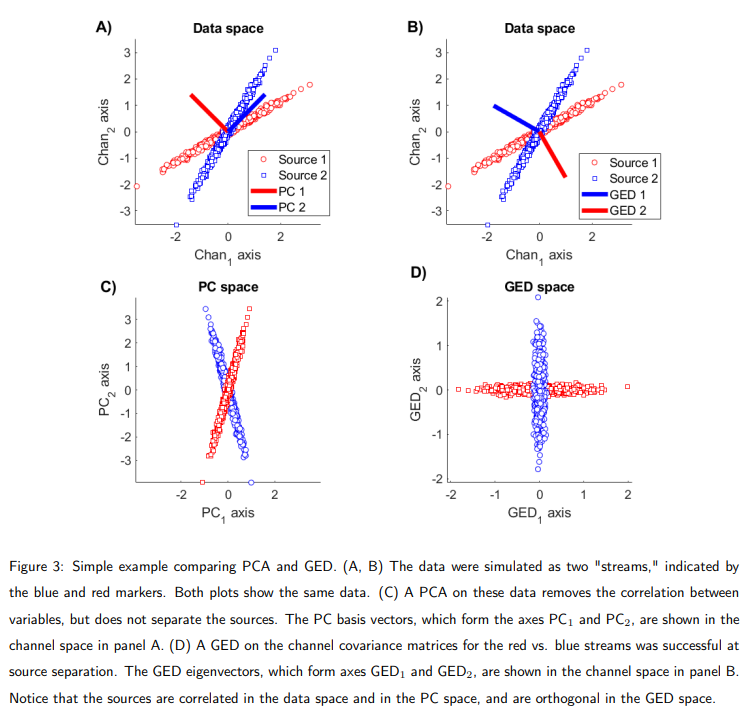

Generalized Eigendecomposition (GED)
For Denoising, Contrast-Enhancement, and Dimension Reduction in Multichannel Electrophysiology
GED is a robust and flexible framework for dimension reduction and source separation in multichannel signal processing.
Background and Motivation
One of the primary difficulties in neuroscience research is that a myriad of neural and cognitive operations unfold simultaneously, and can overlap in time, frequency, and space. In electrophysiology, each electrode simultaneously measures the electrical fields from multiple distinct neural circuits, plus artifacts from muscles and heart beats, as well as noise. The mechanism of source separation depends on the goals of the research.
A conservative interpretation of GED is that it acts as a contrast-enhancing filter by isolating relevant information from irrelevant patterns in the data while simultaneously allowing for a reduced-dimensional signal to analyze. The mixing of sources at electrodes motivates multivariate analyses that identify patterns distributed across electrodes.
The goal of source separation can be treated as one statistical assignment. The univariate approach treats each electrode as an independent measurement; the multivariate approach considers that the signals of interest are embedded in patterns that span many electrodes, and thus isolating those signals requires appropriately designed spatial filters. The increase in simultaneously recorded measurements, computational power, and analysis possibilities makes multivariate methods more attractive, feasible, and insightful now than in previous decades.
We will focus on one family of spatial multivariate analyses, which are used as dimension-reducing, contrast-enhancing spatial filters. A spatial filter is a set of weights, such that the weighted combination of the manifest variables optimizes some criteria. That weighted combination results in a reduced number of virtual data channels (called components) than the original data.
Principal components analysis (PCA) is a popular dimension reduction method that finds a set of channel weights, such that the weighted combination of channels maximizes variance while keeping all components mutually orthogonal. It is an excellent tool for data compression, but has three limitations with regard to contrast enhancement, denoising, and source separation.
- It is descriptive as opposed to inferential
- The PC vectors are constrained to be orthogonal in the channel space
- Maximizing variance does not necessarily maximize relevance
Independent components analysis (ICA) is used with EEG research to attenuate artifacts such as eye blinks and muscle activity, and is a blind separation method that relies on the assumption that sources are statistically independent, and non-Gaussian distributed.
Motivation and Advantages of GED
GED as a tool for denoising, dimension reduction, and source separation of multichannel data has several advantages:
Advantage 1: It is based on specifying hypotheses. The spatial filters created by GED are designed to maximize a contrast between two features of the data: a feature to enhance, and a feature that acts as a reference. Examples of feature pairs are:
- An experiment condition and control condition
- A prestimulus and post-stimulus period
- The trial-average and single-trial data
- Narrowband filtered and unfiltered data
When the two covariance matrices computed from these data are equivalent, the contrast ratio is $1$, the null hypothesis value. GED is an unsupervised method, which can be contrasted with unsupervised methods like PCA or ICA.
Advantage 2: Because of the inherent comparison of two covariance matrices, GED allows for inferential statistics to determine whether a component is significant.
Advantage 3: GED has few key researcher guided analysis choices
Advantage 4: There are no spatial or anatomical constraints
Advantage 5: GED allows for individual differences in topologies
Advantage 6: GED is deterministic and non-iterative
Advantage 7: GED has a long history of application in statistics, machine learning, engineering, and signal processing; in LDA, blind-source separation, and other methods
Brief Overview of GED
GED is a decomposition of two covariance matrices, termed $\mathbf{S}$ and $\mathbf{R}$. These come from features of the data: an experiment condition and a control condition. $\mathbf{S}$ is the signal feature, and $\mathbf{R}$ is the reference feature. The GED finds a weighting of the data channels that maximizes a signal to noise ratio (SNR). The channel weight vector associated with the largest eigenvalue is the spatial filter, and the weighted sum of all channel time series is the component series that maximizes the researcher-defined criteria.

Mathematical and Statistical Aspects
Consider, for example, that the to-be maximized feature is a post-stimulus window, and that the pre-stimulus time window is the reference period. If the post-stimulus data are contained in a channels-by-time matrix $\mathbf{X}_S$, the pre-stimulus data are contained in a channels-by-time matrix $\mathbf{X}_R$, and the set of weights are contained in column $\mathbf{w}$, then the goal of GED can be expressed as:
$$\lambda = \frac{ ||\mathbf{w}^T \mathbf{X}_S||^2 }{ ||\mathbf{w}^T \mathbf{X}_R||^2 }$$
$|| \cdot ||^2$ indicates the squared magnitude of the vector, the sum of its squared elements. $\lambda$ is the ratio of the magnitude of the signal data filtered through $\mathbf{w}$, to the magnitude of the reference data filtered through the same $\mathbf{w}$.
A covariance matrix is an $M \times M$ matrix in which the element in row $i$ and column $j$ contains the covariance between channels $M_i$ and $M_j$, defined as the sum of the element-wise multiplications of the mean-centered channel time series. It is a non-normalized Pearson correlation coefficient, and contains all pair-wise linear interactions.
In a channels-by-time matrix $\mathbf{X}$ with $n$ time points, the covariance matrix is given by:
$$\mathbf{C} = \mathbf{XX}^T(n-1)^{-1}$$
The division by $n-1$ is a normalization factor that prevents the covariance from increasing simply by increasing the number of observations.
The data must be mean-centered before multiplication. Mean offsets in the data will cause the GED solutions to point in the direction of the offsets instead of the direction that maximizes the desired optimization criterion. Mean-centering means that the average value of each channel, over the time window used to compute the covariance matrix, is zero. Variance normalization is not necessary if all channels are in the same scale.
The signal and reference data should be matched on as many features as possible, similar to how a control condition in an experiment should be matched to the experimental condition. In this sense, GED can be thought of as maximizing a signal-to-noise ratio.
Once the two covariance matrices are formed, the goal is to find an $M$-element vector of weights (called vector $\mathbf{w}_i$; each element in $\mathbf{w}_i$ is the weight for the $i^{th}$ data channel), which acts as a spatial filter that reduces the dimensionality from $M$ channels to $1$ component. The elements in $\mathbf{w}$ are constructed such that the linear weighted sum over all channels maximizes the ratio of multivariate power in $\mathbf{S}$ to that of $\mathbf{R}$. Using covariance matrices leads to the quadratic form, a single number that encodes the variance in matrix $\mathbf{S}$ along direction $\mathbf{w}$. The goal of GED is to maximize the ratio of the quadratic forms of two matrices, encoded in $\lambda$.
$$\lambda = \frac{ \mathbf{w}^T \mathbf{Sw} }{ \mathbf{w}^T \mathbf{Rw} }$$
This equation would produce only one spatial filter, however, it can be expanded to include additional vectors $\mathbf{w}_2$ through $\mathbf{w}_M$, with each vector $\mathbf{w}_i$ subject to the constraint that it maximizes $\lambda_i$ while being uncorrelated with previous components (the components are orthogonal in the GED space).
$$\mathbf{\Lambda} = (\mathbf{W}^T \mathbf{RW})^{-1} \mathbf{W}^T \mathbf{SW}$$
Some algebraic manipulations bring us to the optimization problem.
$$\mathbf{\Lambda} = \mathbf{W}^{-1} \mathbf{R}^{-1} \mathbf{W}^{-T} \mathbf{W}^T \mathbf{SW}$$
$$\mathbf{\Lambda} = \mathbf{W}^{-1} \mathbf{R}^{-1} \mathbf{SW}$$
$$\mathbf{RW \Lambda} = \mathbf{SW}$$
The set of weights that maximizes the multivariate signal-to-noise ratio is an eigenvector, and the value of that ratio is the corresponding eigenvalue. In this pairing, the eigenvector $\mathbf{w}_i$ points in a specific direction in the dataspace, but does not convey the importance of that direction. The corresponding eigenvalue $\lambda$ encodes the importance of the direction, but is a scalar and has no intrinsic direction. The eigenvector associated with the largest eigenvalue is the spatial filter that maximizes the $\mathbf{S}:\mathbf{R}$ ratio along direction $\mathbf{w}_1$. The next-largest eigenvalue is paired with the eigenvector that maximizes the ratio while being $\mathbf{R}$-orthogonal to the first direction (satisfying the constraint that $\mathbf{w}_2^T\mathbf{X}$ is orthogonal to $\mathbf{w}_1T\mathbf{X}$, and so on.)
Assumptions Underlying GED
GED relies on several implicit and explicit assumptions:
- That sources mix linearly in the physical data channels, as GED is a linear decomposition
- The data are covariance-stationary (computed from restricted time windows)
- Covariance is a meaningful basis for source separation
- The two covariance matrices are meaningfully separable (by carefully selecting which data features are used to create $\mathbf{S}$ and $\mathbf{R}$)
Understanding and Avoiding Overfitting
GED involves leveraging overfitting in a beneficial way without introducing systematic biases into the analyses that could confound the results. This requires some additional considerations compared to other methods like PCA and ICA. There are four solutions to avoid overfitting causing confounds in the analyses:
- Apply statistical contrasts that are orthogonal to the maximization criteria
- Use cross-validation, fitting the model (the spatial filter) using part of the data and applying the model to a small portion of the data that was not used to train the model
- Create the spatial filter based on independent data
- Apply inferential statistics via permutation-testing to evaluate the probability that a component would arise given overfitting on data when the null hypothesis is true.
Inferential Statistics
The expected value of $\lambda$ is $1$ when the two covariance matrices are the same, but in real data, $\mathbf{S}$ and $\mathbf{R}$ can be expected to differ due to sampling variability and noise, even if drawn from the same population of data. Therefore, the eigenvalues can be expected to be distributed around $1$. It is trivial that roughly half of the eigenvalues of a GED on null-hypothesis data will be larger than $1$.
Inferential statistical evaluation of GED solutions involves creating an empirical null-hypothesis distribution of eigenvalues, and comparing the empirical eigenvalue relative to that distribution. Consider an experiment with $100$ trials, and the GED is based on the pre-trial to post-trial period. Each trial provides two covariance matrices, resulting in $200$ in total. Each covariance matrix is randomly assigned to be averaged into $\mathbf{S}$ or $\mathbf{R}$, and a GED is performed. From the resulting collection of $M$ eigenvalues, the largest is selected. This is the largest eigenvalue that arose under the null hypothesis. This shuffling procedure is repeated $1000$ times, with each iteration having a new random assignment of data segment to covariance matrix, and the $1000$ pseudo-$\lambda$'s (called $\omega$ to distinguish from the real data) is the distribution of the largest eigenvalues expected under the null hypothesis that $\mathbf{S} = \mathbf{R}$. The empirical lambda, the largest eigenvalue obtained from the GED without shuffling, can then be evaluated relative to the distribution as:
$$\lambda_z = \frac{ \lambda - \bar{\omega} }{ \sigma (\omega) }$$
$\bar{\omega}$ indicates the average of the $1000$ largest eigenvalues from permutation shuffling, and $\sigma (\omega)$ is the standard deviation. A GED component is statistically significant if $\lambda_2$ exceeds some selected z-statistic threshold.
Sign Uncertainty
Eigenvectors have a fundamental sign uncertainty, because they point along a 1D subspace (eigenvector $\mathbf{w}$ is the same as $- \mathbf{w}$). Sign uncertainties do not affect spectral or time-frequency analyses, but they do affect time domain (ERP) analyses and topographical maps.
There are two principled methods for fixing the sign of the eigenvector. One is to ensure that the electrode with the largest absolute value in the component map is positive. Thus, if the largest-magnitude electrode has a negative value, the entire eigenvector is multiplied by $-1$. A second method is to compute a group-averaged ERP or topographical map, correlate each individual subject's data with the group average, and flip the eigenvector sign for any datasets that correlate negatively with the group average.
Practical Aspects
Preparing Data for GED
GED doesn't know what is real signal and what is noise or artifact. Therefore, the data should be properly cleaned prior to GED, such as by rejecting noisy trials, temporal filtering, and ICA cleaning.
Selecting Data Features
Selecting two data features for the GED is the single most important decision that the researcher makes during a GED-based analysis. The main hard constraint is that the data channels must be the same and in the same order.
In general, the possibilities for selecting data can be categorized as optimizing one of the following:
- Condition Differences
- Task Effects
- Spectral Contrast
One way to increase the stability of a covariance matrix is to increase the number of time points in the data segment. However, the size of the time window presents a trade-off between cognitive specificity vs. covariance quality. Shorter time windows better isolate events, but risk being noisier. We have gotten better results by computing $N$ covariance matrices of $N$ data segments (e.g., from $N$ trials) and then averaging together, vs. constructing all segments into one wide data matrix.
It is possible to z-normalize each data channel, however, this will change the covariance matrix and thus can affect the GED solution. This is because z-normalizing each channel separately alters the magnitude of the between-channel covariances. Channels with low variance are inflated whereas channels with high variance are deflated. An alternative is to mean-center each channel separately, and then divide all channels by their pooled standard deviation. This approach preserves the relative covariance magnitudes within modality, while simultaneously ensuring that the total dataset has a pooled standard deviation of $1$.
Regularization
Regularization involves adding some constant to the cost function of an optimization algorithm. It has several benefits in machine learning, including smoothing the solution to reduce overfitting. There are several forms of regularization. Shrinkage regularization is commonly used in GED applications, and involves adding a small number to the diagonal of the $\mathbf{R}$ matrix (thus, $\mathbf{\tilde{R}}$ replaces $\mathbf{R}$). That small number is some fraction of the average of $\mathbf{R}$'s eigenvalues.
$$\mathbf{\tilde{R}} = \mathbf{R}(1 - \gamma) + \gamma \alpha \mathbf{I}_M$$
$$\alpha = \sum_{i=1}^M \lambda_i$$
- $\mathbf{I}_M$ is the $M \times M$ identity matrix
- $\alpha$ is the average of all eigenvalues of $\mathbf{R}$
- $\gamma$ is the regularization amount
One should use as little regularization as is necessary. Shrinkage regularization noticeably qualitatively improves the solution for matrices that are reduced-rank, noisy, or difficult to separate, while having little or no noticeable effect on the GED solution for clean and easily separable matrices. When $\gamma = 1$, GED becomes a PCA. Thus, an interpretation of shrinkage regularization is that it pushes the GED slightly towards favoring high-variance solutions at the potential cost of reduced separability between $\mathbf{S}$ and $\mathbf{R}$.
Which Component to Use
Theoretically, the component with the largest eigenvalue has the best separability. However, this should be visually confirmed before applying the spatial filter and interpreting the results, because the component that mathematically best separates two data features might not be a component of interest.
Complex GED Solutions
The GED may return complex solutions, which means complex-valued eigenvalues and eigenvectors. When there are complex solutions, they appear in conjugate pairs. Although there is nothing mathematically wrong with complex solutions to a GED, it is usually a bad sign, indicative of there being no good solution in the real domain. This can arise in the presence of noisy covariance matrices, or if the $\mathbf{S}$ and $\mathbf{R}$ are too close to each other. When complex solutions are observed, one can consider using more data to create the covariance matrices or redefine the optimization criteria.
Two-Stage Compression and Separation
A two-stage GED involves 1) data compression via PCA and then 2) source separation via GED. This is useful when there are many data channels or for severely reduced-rank covariance matrices. The initial compression stage should be added to the analysis pipeline only when GED returns unsatisfactory results while the data matrices are very large.
The goal of the first stage is to produce an $N \times T$ dataset, where $N$ is the number of principal components with $N \lt M$. This is obtained as the eigenvectors matrix $\mathbf{V}$ times the data matrix (the eigenvectors $\mathbf{V}$ are from the PCA on the data).
$$\mathbf{Y} = \mathbf{V}_{1:N}^T \mathbf{X}$$
The number of PCA components to retain ($N$) can be based on one of two factors. First, one can use the rank of the data matrix as the dimensionality. The advantage of this approach is that it prevents information loss in the compression. This guarantees full-rank matrices in the GED and thus should improve numerical stability of the solution.
A second method is to select the number of compressed dimensions based on a statistical criterion. If the eigenvalues of the PCA are converted to percent of total variance explained, then a variance threshold applied.
GED then proceeds as described previously except using data matrix $\mathbf{Y}$ instead of $\mathbf{X}$. It will be desirable to have the component maps in the original channel space, instead of the compressed PC space. This is obtained by projecting the covariance matrix first through the GED eigenvector as described earlier, and then again through the PCA eigenvectors to undo the first-stage compression: $\mathbf{w}^T \mathbf{SV}_{1:N}$.
Multiple Significant Components
Although the component with the largest eigenvalue is theoretically the most relevant, it is possible that multiple linearly separable dimensions separate $\mathbf{S}$ from $\mathbf{R}$. When appropriate, permutation testing can be used to determine the number of statistically significant components from a GED.
The exact interpretation of multiple significant components is not entirely clear. The simple interpretation is that they reflect distinct brain features that separate the two covariance matrices. In other words, that there is a multidimensional subspace that separates the $\mathbf{S}$ and $\mathbf{R}$, and the number of significant components is the dimensionality of that subspace.